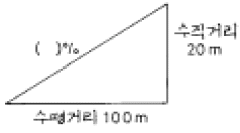
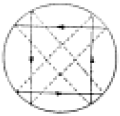
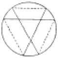
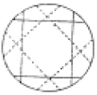
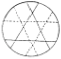
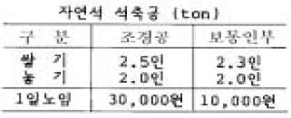

조경기능사 (2005-04-03 기출문제)
1과목: 조경일반
1. 다음 중 오픈 스페이스에 해당되지 않는 것은?
- 건폐지
- 공원묘지
- 광장
- 학교운동장
(정답률: 87%)

2. 조경에서 제도시 가장 많이 사용되는 제도용구로 가장 부적당한 것은?
- 원형 템플릿
- 삼각 축척자
- 콤파스
- 나침반
(정답률: 88%)
3. 다음 중 비스타(Vista)에 대한 설명으로 가장 잘 표현된 것은?
- 서양식 분수의 일종이다.
- 차경을 말하는 것이다.
- 정원을 한층 더 넓게 보이게 하는 효과가 있다.
- 스페인 정원에서는 빼 놓을 수 없는 장식물이다.
(정답률: 74%)
4. "자연은 직선을 싫어한다."라고 주장한 영국의 낭만주의 조경가는?
- 브리지맨
- 켄트
- 챔버
- 렙톤
(정답률: 79%)
5. 다음 미기후(micro-climate)에 대한 설명 중 적합하지 않은 것은?
- 지형은 미기후의 주요 결정 요소가 된다.
- 그 지역 주민에 의해 지난 수년 동안의 자료를 얻을 수 있다.
- 일반적으로 지역적인 기후 자료보다 미기후 자료를 얻기가 쉽다.
- 미기후는 세부적인 토지이용에 커다란 영향을 미치게 된다.
(정답률: 89%)
6. 다음 중 다른 도면들에 비해 확대된 축척을 사용하며 재료, 공법, 치수 등을 자세히 기입하는 도면의 종류로 가장 적당한 것은?
- 상세도
- 투시도
- 평면도
- 단면도
(정답률: 80%)
7. 다음 조경미의 설명으로 틀린 것은?
- 질감이란 물체의 표면을 보거나 만지므로 느껴지는 감각을 말한다.
- 통일미란 개체가 특징있는 것으로 단순한 자태를 균형과 조화속에 나타내는 미이다.
- 운율미란 연속적으로 변화되는 색채, 형태, 선, 소리 등에서 찾아볼 수 있는 미이다.
- 균형미란 가정한 중심선을 기준으로 양쪽의 크기나 무게가 보는 사람에게 안정감을 줄 때를 말한다.
(정답률: 63%)
8. 회교식 건축수법과 함께 발달한 정원양식은?
- 이탈리아정원
- 프랑스정원
- 근대건축식정원
- 스페인정원
(정답률: 85%)
9. 묘지공원의 설계 지침으로 가장 올바른 것은?
- 장제장 주변은 기능상 키가 적은 관목만을 식재한다.
- 산책로는 이용하기 좋게 주로 직선화 한다.
- 묘지공원내는 경건한 분위기를 위해 어린이 놀이터 등 휴게시설 설치를 일체 금지시킨다.
- 전망대 주변에는 큰 나무를 피하고, 적당한 크기의 화목류를 배치한다.
(정답률: 62%)
10. 우리나라 조경의 성격형성에 영향을 끼친 주요 인자가 아닌 것은?
- 신선 사상
- 급격한 경사를 지닌 구릉 지형
- 사계절이 분명한 기후
- 순박한 민족성
(정답률: 77%)
11. 다음 중 인도정원에 영향을 미친 가장 중요한 요소는?
- 노단
- 토피아리
- 돌수반
- 물
(정답률: 87%)
12. 축선(軸線,axis)이 중심이 되어 조성되었던 정원은?
- 영국 정원
- 스페인 정원
- 프랑스 정원
- 일본 정원
(정답률: 68%)
13. 골프장 코스 중 출발지점을 말하는 것은?
- 티이(tee)
- 그린(green)
- 페어웨이(fair way)
- 해저드(hazard)
(정답률: 93%)
14. 다음 중 일위대가표 작성의 기초가 되는 것으로 가장 적당한 것은?
- 시방서
- 내역서
- 견적서
- 품셈
(정답률: 64%)
15. 이탈리아 정원의 구성요소와 가장 관계가 먼 것은?
- 테라스(terrrace)
- 중정(patio)
- 계단 폭포(cascade)
- 화단(parterre)
(정답률: 78%)
2과목: 조경재료
16. 다음 벽돌 중 압축강도가 가장 강해야 하는 것은?
- 보통 벽돌
- 포장용 벽돌
- 치장용 벽돌
- 조적용 벽돌
(정답률: 74%)
17. 다음 수종들 중 단풍이 황색인 것은?
- 홍단풍나무
- 감나무
- 붉나무
- 고로쇠나무
(정답률: 79%)
18. 정원내에 향기가 가장 많이 나게 하기 위하여 식재하는 수종은?
- 담쟁이덩굴
- 피라칸사스
- 식나무
- 목서
(정답률: 80%)
19. 다음 중 석질이 치밀하고 경질이어서 내구성과 내화성이 좋으므로 조경공사시 가장 보편적으로 많이 사용하는 석재는?
- 화강암
- 안산암
- 현무암
- 응회암
(정답률: 82%)
20. 시멘트의 주재료에 속하지 않는 것은?
- 화강암
- 석회암
- 질흙
- 광석찌꺼기
(정답률: 58%)
21. 운반 거리가 먼 레미콘이나 무더운 여름철 콘크리트의 시공에 사용하는 혼화제는 어느 것인가?
- 지연제
- 감수제
- 방수제
- 경화촉진제
(정답률: 89%)
22. 다음 중 천근성(淺根性)수종으로 짝지어진 것은?
- 독일가문비나무, 자작나무
- 젓나무, 백합나무
- 느티나무, 은행나무
- 백목련, 가시나무
(정답률: 69%)
23. 다음 중 조경수목의 규격을 표시할 때 수고와 수관폭으로 표시하는 것은 ?
- 느티나무
- 주목
- 은사시나무
- 벚나무
(정답률: 67%)
24. 다음 중 혼합시멘트로 가장 적당한 것은?
- 보통시멘트
- 조강시멘트
- 실리카시멘트
- 중용열시멘트
(정답률: 63%)
25. 다음 중 잔디(한국잔디)특성 중 가장 거리가 먼 것은?
- 지피성이 강하다.
- 내답압성이 강하다.
- 재생력이 강하다.
- 내습력이 강하다.
(정답률: 74%)
26. 다음 포장재료 중 광장 등 넓은 지역에 포장하며, 바닥에 색채 및 자연스런 문양을 다양하게 할 수 있는 소재는?
- 벽돌
- 우레탄
- 자기타일
- 고압블럭
(정답률: 70%)
27. 목재의 방부재로 사용하는 C.C.A의 성분이 바르게 짝지어 진 것은 ?
- 크롬 - 구리 - 비소
- 크롬 - 구리 - 아연
- 철 - 구리 - 아연
- 탄소 - 구리 - 비소
(정답률: 81%)
28. 다음 중 조경공사에 사용되는 섬유재에 관한 설명으로 틀린 것은?
- 볏짚은 줄기를 감싸 해충의 잠복소를 만드는데 쓰인다.
- 새끼줄은 뿌리분이 깨지지 않도록 감는데 사용한다.
- 밧줄은 마 섬유로 만든 섬유로프가 많이 쓰인다.
- 새끼줄은 5타래를 1속이라 한다.
(정답률: 83%)
29. 다음 중 폭포나 벽천 등의 마감재로 가장 부적당한 것은?
- 자연석
- 화강암
- 유리 섬유강화 플라스틱
- 목재
(정답률: 85%)
30. 다음 중 우리나라에서 가장 많이 이용되는 잔디는?
- 들잔디
- 고려잔디
- 비로드잔디
- 갯잔디
(정답률: 93%)
31. 다음 중에서 관목끼리 짝지어진 것은?
- 주목, 느티나무, 단풍나무
- 진달래, 회양목, 꽝꽝나무
- 등나무, 잣나무, 은행나무
- 매실나무, 명자나무, 칠엽수
(정답률: 87%)
32. 다음 중 차량 소통이 많은 곳에 녹지를 조성하려고 할 때 가장 적당한 수종은?
- 조팝나무
- 향나무
- 왕벚나무
- 소나무
(정답률: 59%)
33. 다음 금속재료의 특성 중 장점이 아닌 것은?
- 다양한 형상의 제품을 만들 수 있고 대규모의 공업생산품을 공급할 수 있다.
- 각기 고유의 광택을 가지고 있다.
- 재질이 균일하고, 불에 타지않는 불연재이다.
- 내산성과 내알카리성이 크다.
(정답률: 85%)
34. 다음 수종 중 음수가 아닌 것은?
- 주목
- 독일가문비
- 팔손이나무
- 석류나무
(정답률: 72%)
35. 다음 중 모르타르의 구성 성분이 아닌 것은?
- 물
- 모래
- 자갈
- 시멘트
(정답률: 82%)
3과목: 조경 시공 및 관리
36. 한국형 잔디의 특징을 잘못 설명한 것은?
- 포복성이어서 밟힘에 강하다.
- 그늘에서도 잘 자란다.
- 손상을 받으면 회복속도가 느리다.
- 병해충과 공해에 비교적 강하다.
(정답률: 76%)
37. 소나무에 많이 발생하는 솔나방 구제에 가장 효과적인 농약은?
- 만코지제(다이센)
- 캡탄수화제(오소싸이드)
- 포리옥신수화제
- 디프제(디프록스)
(정답률: 72%)
38. 다음 중 조경시공의 특성이 아닌 것은?
- 생명력이 있는 식물재료를 많이 사용한다.
- 시설물은 미적이고 기능적이며 안전성과 편의성 등이 요구된다.
- 조경수목은 정형화된 규격표시가 있기 때문에 규격이 다른 나무들은 현장 검수에서 문제의 소지가 있다.
- 조경수목의 단가 적용은 정형화된 규격에 의해서 시행되고 있으며, 수목의 조건에 따라 단가 및 품셈을 증감하여 사용하고 있다.
(정답률: 62%)
39. 다음 중 더돋기의 정의로 가장 알맞은 것은?
- 가라앉을 것을 예측하여 흙을 계획높이 보다 더 쌓는것
- 중앙분리대에서 흙을 볼록하게 쌓아 올리는 것
- 옹벽앞에 계단처럼 콘크리이트를 쳐서 옹벽을 보강하는 것
- 계단의 맨 윗부분에 설치하는 시설물이다.
(정답률: 88%)
40. 지형도에서 등고선 간격(수직거리)이 20m이고, 등고선에 직각인 두 등고선의 면거리(수평거리)가 100m인 경우 경사도(%)는 ?

- 10 %
- 20 %
- 50 %
- 80 %
(정답률: 72%)
41. 다음 중 경석 앉히기에 관한 설명으로 틀리는 것은?
- 시선이 집중하기 쉬운 곳, 시선을 유도해야 할 곳에 앉힌다.
- 홀로 앉히기도 하나, 보통 짝으로 구성한다.
- 돌과 돌 사이는 움직이지 않도록 시멘트로 굳힌다.
- 돌 주위에는 회양목, 철쭉 등을 돌에 붙여 식재한다.
(정답률: 62%)
42. 속효성 비료로 계속 주면 흙이 산성으로 변하는 비료는?
- 황산암모늄
- 요소
- 황산칼륨
- 중과석
(정답률: 69%)
43. 도로에 배수관이 설치되는 경우 L형 측구 몇 m 마다 우수거를 설치해야 하는가?
- 10m
- 15m
- 20m
- 40m
(정답률: 74%)
44. 다음 새끼로 뿌리분을 감는 방법을 나타낸 그림 중 석줄 두번걸기를 표현한 것은?




(정답률: 66%)
45. 개화결실을 목적으로 실시하는 정지, 전정 방법 중 옳지 않은 것은?
- 약지(弱枝)는 길게, 강지(强枝)는 짧게 전정하여야 한다.
- 묵은 가지나 병충해 가지는 수액유동 전에 전정한다.
- 작은 가지나 내측(內側)으로 뻗은 가지는 제거한다.
- 개화 결실을 촉진하기 위하여 가지를 유인하거나 단근 작업을 실시한다.
(정답률: 79%)
46. 토공사(정지) 작업시 일정한 장소에 흙을 쌓는 일을 무엇이라 하는가?
- 객토
- 절토
- 성토
- 경토
(정답률: 91%)
47. 잔디의 식재지 표토의 최소토심(생육최소깊이)은?
- 10㎝
- 20㎝
- 30㎝
- 45㎝
(정답률: 69%)
48. 잠복소를 설치하는 목적에 가장 적당한 설명은 어느것인가?
- 동해의 방지를 위해
- 월동 벌레를 유인하여 봄에 태우기 위해
- 겨울의 가뭄 피해를 막기 위해
- 동해나 나무생육 조절을 위해
(정답률: 84%)
49. 관수공사에 대한 설명으로 가장 부적당한 것은?
- 관수방법은 지표 관개법, 살수 관개법, 낙수식 관개법으로 나눌 수 있다.
- 살수 관개법은 설치비가 많이 들지만, 관수효과가 높다
- 수압에 의해 작동하는 회전식은 360°까지 임의 조절이 가능하다.
- 회전 장치가 수압에 의해 지상 10cm로 상승 또는 하강하는 팝업(pop-up) 살수기는 평소 시각적으로 불량하다
(정답률: 85%)
50. 자연석 100ton을 절개지에 쌓으려 한다. 다음 표를 참고할 때 노임은 얼마인가?

- 2,500,000원
- 5,600,000원
- 8,260,000원
- 9,800,000원
(정답률: 62%)
51. 어린이를 위한 운동 시설로서 모래터의 깊이는 어느 정도가 가장 알맞는가?
- 5 ~ 10cm
- 10 ∼ 20cm
- 20 ∼ 30cm
- 30cm 이상
(정답률: 70%)
52. 진딧물 구제에 적당한 약제가 아닌 것은?
- 메타유제(메타시스톡스)
- 디디브이피제(DDVP)
- 포스팜제(다이메크론)
- 만코지제(다이센 M45)
(정답률: 43%)
53. 일반적으로 수목의 뿌리돌림시, 분의 크기는 근원 직경의 몇 배 정도가 알맞는가?
- 2배
- 4배
- 8배
- 12배
(정답률: 90%)
54. 설계도의 종류 중에서 입체적인 느낌이 나지 않는 도면은 무엇인가?
- 상세도
- 투시도
- 조감도
- 스케치도
(정답률: 60%)
55. 난지형 잔디밭에 뗏밥을 넣어주는 적기는?
- 3 ~ 4월
- 6 ~ 8월
- 9 ~ 10월
- 11 ~ 1월
(정답률: 82%)
56. 소나무류의 잎솎기는 어느 때 하는 것이 좋은가?
- 3월경
- 4월경
- 6월경
- 8월경
(정답률: 63%)
57. 추위에 의하여 나무의 줄기 또는 수피가 수선 방향으로 갈라지는 현상을 무엇이라 하는가?
- 고사
- 피소
- 상렬
- 괴사
(정답률: 82%)
58. 돌 쌓기 공사에서 4목도 돌이란 무게가 몇 kg 정도의 것을 말하는가?
- 약 100kg
- 약 150kg
- 약 200kg
- 약 300kg
(정답률: 69%)
59. 45㎡에 전면 붙이기에 의해 잔디 조경을 하려고 한다. 필요한 평떼량은 얼마인가? (단 잔디 1매의 규격은 30cm×30cm ×3cm 이다.)
- 약 200매
- 약 300매
- 약 500매
- 약 700매
(정답률: 78%)
60. 이식한 수목의 줄기와 가지에 새끼로 수피감기 하는 이유가 아닌 것은?
- 경관을 향상시킨다.
- 수피로부터 수분 증산을 억제한다.
- 병·해충의 침입을 막아준다.
- 강한 태양광선으로부터 피해를 막아 준다.
(정답률: 83%)